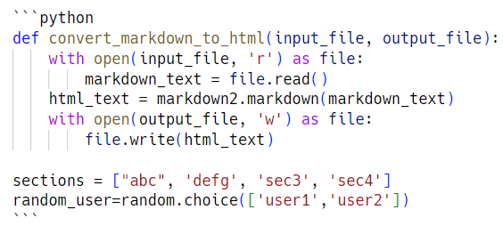

Markdown编辑器会把剪贴板中的图片, 直接变成文件链接, 然后粘贴到Markdown文本中. 在预览中能够直接看到图片. 用Pycharm的问题是, 截图之后, 粘贴到文件中时, 图片的清晰度变得很低.
用快捷键可以直接把ishot剪切出来的图片, 粘贴到md文档中.√
即使是从网络上拷贝出来的图片, 它也会复制到本地, 并修改名字.

剪贴板中的图片和在网络上复制的图片都可以粘贴. 第一幅图片是剪贴板中的图, 第二幅和第三幅是从网络上粘贴来的.
第一幅图


例如, 在Markdown文件中这样写, 注意蝌蚪符后面的python是小写↓√ 
得到的预览结果是这样的↓ 注意插入代码之前, 要先插入一个空行, 避免代码块和其他内容混在一起.√
```python def convertmarkdowntohtml(inputfile, outputfile): with open(inputfile, 'r') as file: markdowntext = file.read() htmltext = markdown2.markdown(markdowntext) with open(outputfile, 'w') as file: file.write(html_text)
sections = ["abc", 'defg', 'sec3', 'sec4'] random_user=random.choice(['user1','user2']) ```